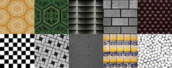
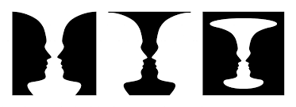
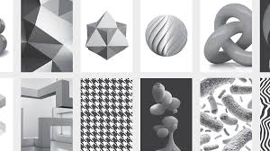
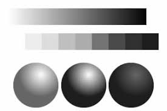

Elements of Graphic Design
Graphic design is built on fundamental elements that serve as the building blocks of all visual communication. These elements are combined and manipulated to create meaning, evoke emotion, and guide the viewer’s experience. Understanding them is essential for every designer.
Line

Lines are the most basic element of design. They can be straight, curved, thick, thin, or broken. Lines define shapes, create divisions, and lead the viewer’s eye across a composition. Bold horizontal lines can suggest stability, while diagonal lines convey movement and energy.
Shape
Shapes are formed when lines enclose a space. They can be geometric (circles, squares, triangles) or organic (free-form, natural shapes). Shapes help create structure, emphasis, and symbolic meaning in a design composition.
Texture

Texture refers to the surface quality of an object, whether real or implied. It can appear rough, smooth, soft, or hard. In graphic design, texture adds depth and visual interest to otherwise flat designs.
Space

Space is the area around and between elements. Positive space is the area occupied by objects, while negative space is the empty space surrounding them. Effective use of space improves readability and helps highlight important elements.
Form

Form refers to objects that appear three-dimensional and have depth and volume. In two-dimensional design, form is created through shading, gradients, and perspective to give the illusion of realism.
Value

Value is the lightness or darkness of a color. It helps create contrast, depth, and emphasis. Designers use value to guide attention and create mood within a composition.